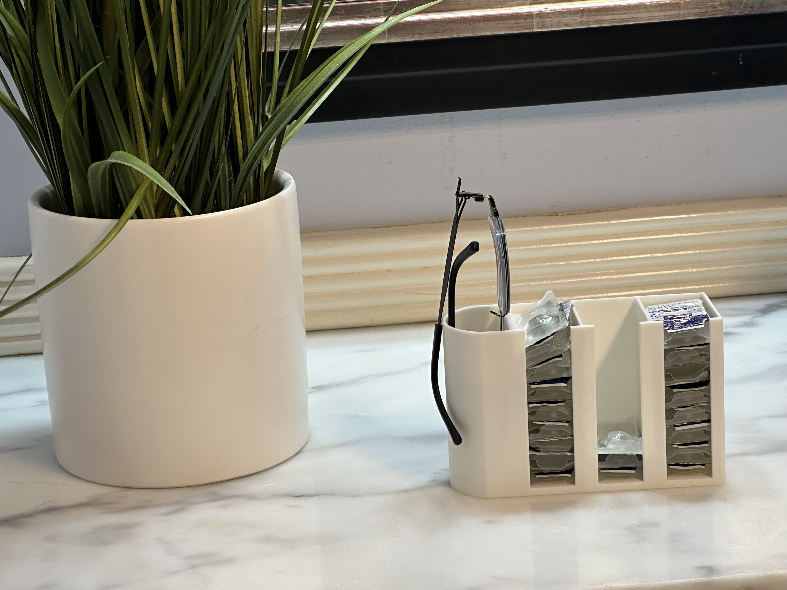
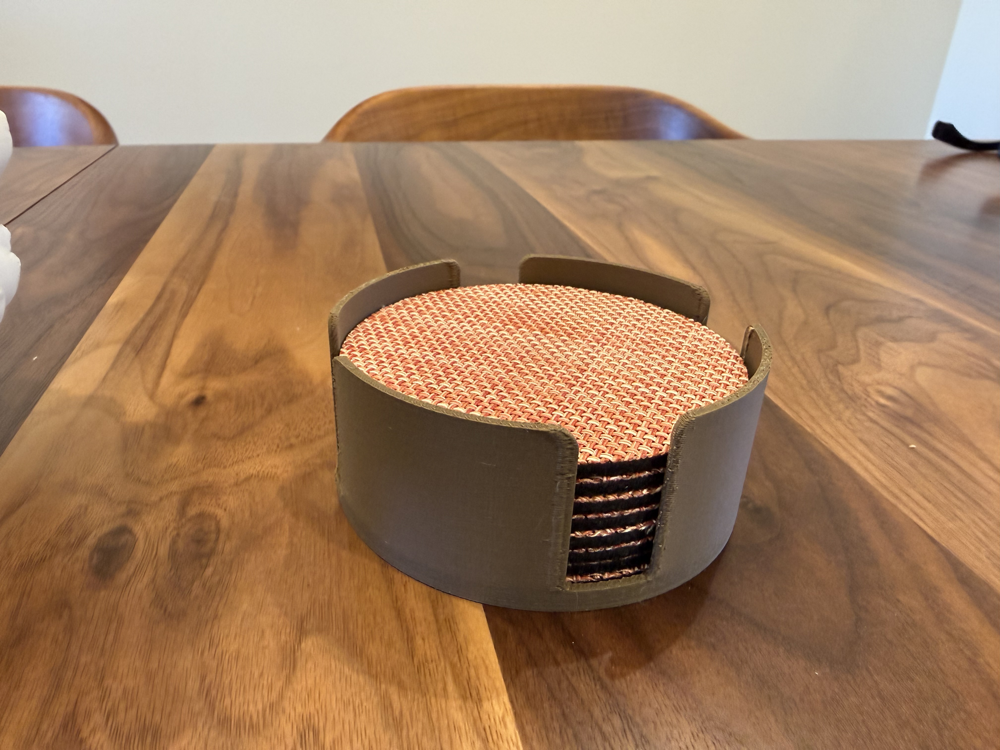
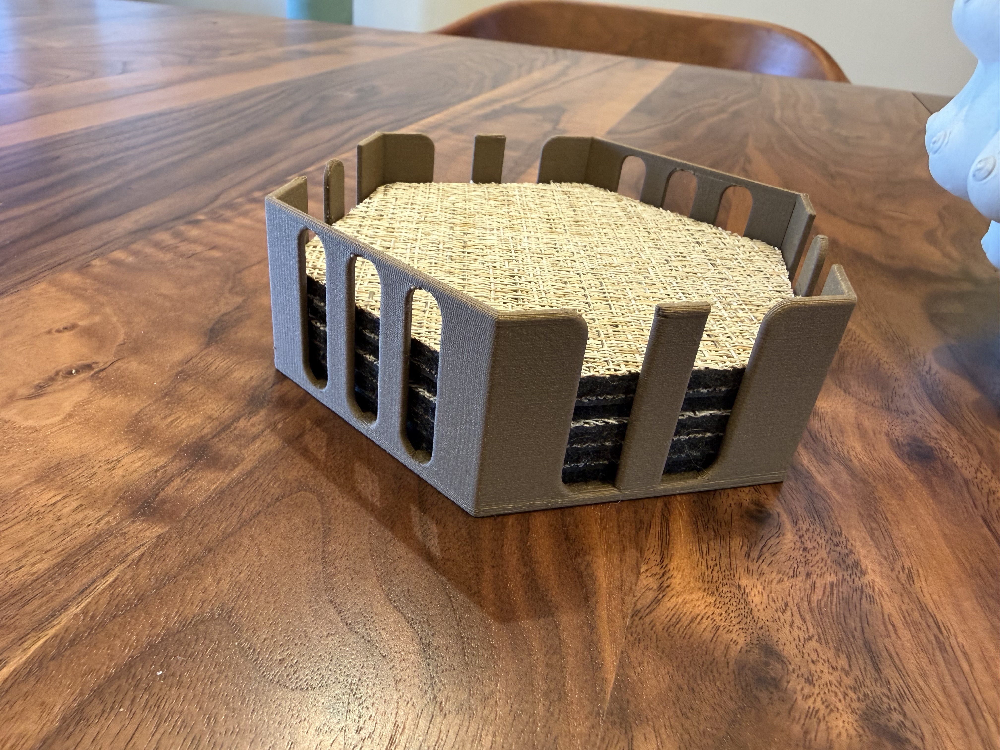

Candidate hand-lettering fonts for the headline, short headings and callouts. In the site theme, paragraphs use the system sans, short technical labels use osifont and code uses Courier Prime. Click a card to try a font on the samples below.
SF Bay Area · Dev’d by a curious engineer
I design useful, oddly specific organizers and home goods around real objects, test them in real life, and make them to order.
LittleDevLab is also where I’m learning by building—with 3D design, Python, AI, automation, and whatever problem catches my attention next. I document what works, what doesn’t, and what I break along the way.



Body copy uses the system sans for comfortable reading; the hand lettering stays on the heading and notes.
Material: PLA+ · 0.2 mm layers · Rev B
Body copy uses the system sans for comfortable reading; the hand lettering stays on the heading and notes.
Material: PLA+ · 0.2 mm layers · Rev B